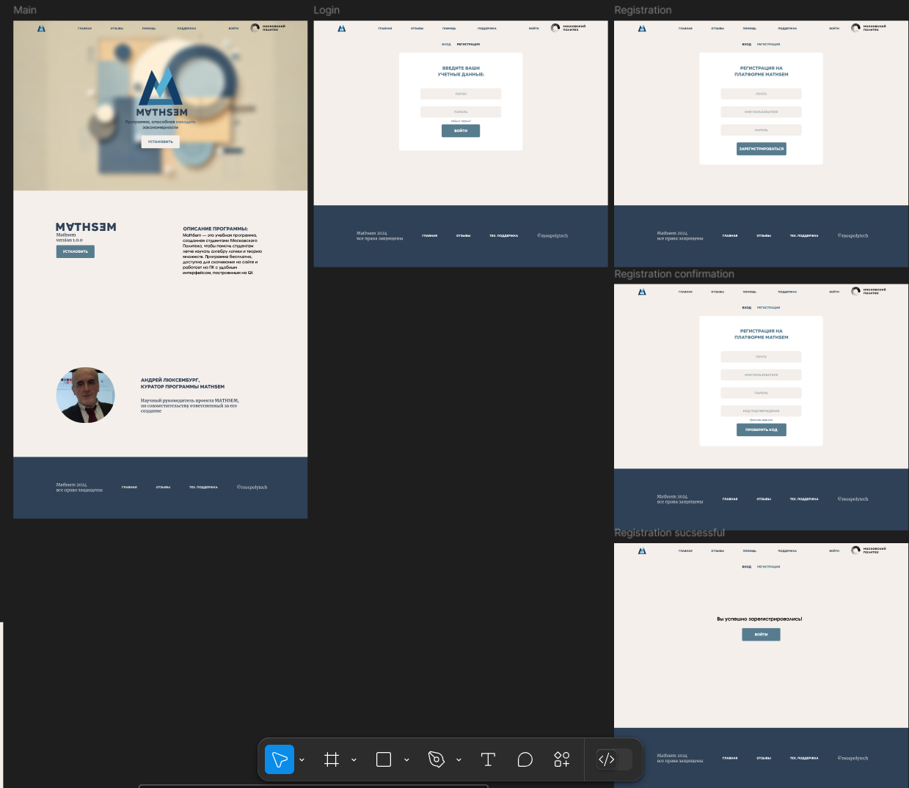
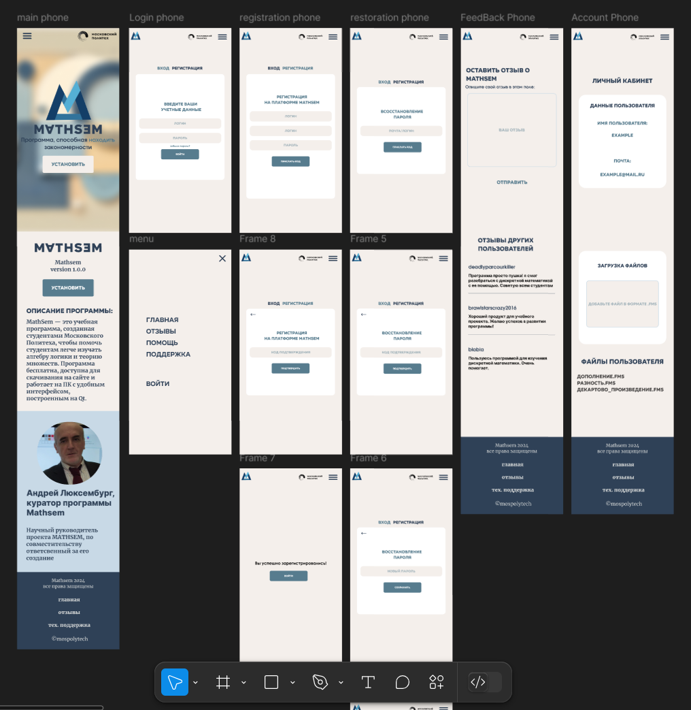

Работа с макетом
В рамках командной работы мы провели детальный анализ структуры и
визуального оформления будущего сайта проекта MathSem. Обсудив
ключевые элементы пользовательского интерфейса и сценарии
взаимодействия, мы приступили к созданию макета в среде Figma. На
протяжении всего процесса проектирования мы не раз пересматривали и
уточняли структуру, дополняли элементы, подбирали цвета, шрифты и
взаимодействие блоков, чтобы интерфейс был интуитивным, современным
и эстетически выверенным. Результатом нашей работы стал финальный
макет сайта, который представлен как в десктопной, так и в мобильной
версии. Он отражает концепцию проекта и адаптирован под
пользователей разного уровня подготовки.


Модификация программы
После анализа прототипа уже функционирующей версии программы мы приступили к этапу её модификации. Командой были выдвинуты предложения по внедрению новых функций, направленных на расширение возможностей платформы и повышение её пользовательской ценности. Также в процессе обсуждения были выявлены элементы, требующие доработки или исправлений.
На текущий момент команда разработчиков на языке C++ активно занимается реализацией поставленных задач: реализуются новые модули, устраняются обнаруженные недочёты, улучшается структура кода и повышается стабильность работы системы. Работа ведётся поэтапно с учётом обратной связи и требований, выработанных в ходе проектной деятельности.
Работа над новыми моделями
После завершения работы над макетом команда фронтенд- и бэкенд-разработчиков приступила к этапу технической реализации сайта. Началась вёрстка пользовательского интерфейса, а также создание серверной логики и программной архитектуры с использованием языка программирования Java.
Параллельно с этим ведётся разработка прототипа мобильного приложения. Команда активно работает над его дизайном, формирует структуру экранов, обсуждает технологический стек, включая выбор подходящих языков программирования, библиотек и фреймворков. Работа ведётся с учётом требований к адаптивности, безопасности и масштабируемости, что позволит обеспечить высокое качество конечного продукта и удобство его использования.